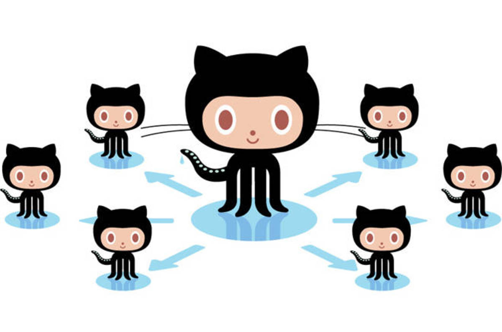

Forking
A fork is a copy of a repository. Forking a repository allows you to freely experiment with changes without affecting the original project.

A great example of using forks to propose changes is for bug fixes. Rather than logging an issue for a bug you've found. You can:
- Fork the repo
- Make the fix
- Submit a pull request for the project
If I like you're work and it meets the Code Style Guidelines, I might pull your fix into the original repository!
Fork the Repo
- Navigate to the project's repository on GitHub
- In the top-right corner of the page, click
Fork
Keeping your fork synced
You might fork a project in order to propose changes to the upstream, or original, repository. In this case, it's good practice to regularly sync your fork with the upstream repository.
Info
The following is based on an article by Chris Simpkins.
The Problem
A downstream repo (aka the "fork") you just made commonly needs to stay current with the upstream work (aka the original repo). The following steps allow you to achieve this.
Add the Remote Upstream Repo
This step defines the upstream repo of your fork. Replace the <URL.git> with the original repo's URL without the < >.
git remote add upstream <URL.git>

Getting the latest Upstream Changes
You will want to run this command the first time you add the upstream repo. This will ensure you are connected to the repo correctly.
git remote -v
This will show you something like the following:
> origin https://github.com/YOUR_USERNAME/YOUR_FORK.git (fetch)
> origin https://github.com/YOUR_USERNAME/YOUR_FORK.git (push)
> upstream https://github.com/rowland007/ORIGINAL_REPOSITORY.git (fetch)
> upstream https://github.com/rowland007/ORIGINAL_REPOSITORY.git (push)
After you verify you're connected you can get the branches you'll be working with. You will also use this command to stay up-to-date with the upstream repo. I suggest running this command each time you open the project before you start making changes. This will ensure you're on the latest changes.
git fetch upstream
Merging Upstream changes into your Downstream Repo
From your develop branch, use the following merge command to merge the upstream develop branch changes into your local source:
git merge -S upstream/develop
Very rarely will my projects not have a develop branch (usually my websites like this one). When there is a develop branch, no work should take place from the master branch.

Tip
Big take away here is:
- upstream & original means they are mine
- downstream, fork, and origin are yours
See the next section about creating a new branch for your work.